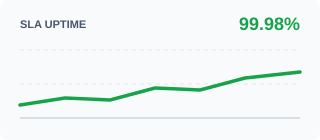
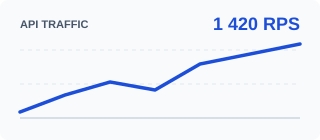
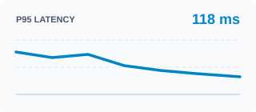
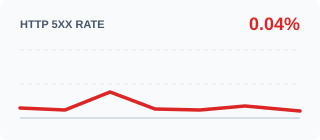
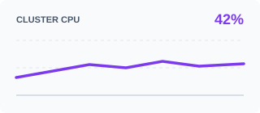
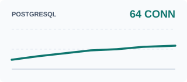
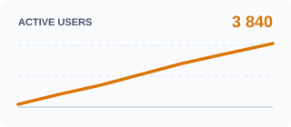
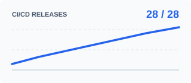

Доступність SLA — 99,98%
Сумарний час безперебійної роботи продуктивних вузлів за поточний місяць без критичних простоїв.
Детальний звіт SLAОперативний моніторинг ключових метрик інфраструктури, пропускної здатності API та якості обслуговування користувачів у реальному часі.

Сумарний час безперебійної роботи продуктивних вузлів за поточний місяць без критичних простоїв.
Детальний звіт SLA
Пікове навантаження на шлюз REST API зросло на 14% порівняно з попереднім тижнем.
Аналіз трафіку
95% усіх HTTP-запитів обробляються швидше нормативного порога у 250 мс завдяки кешуванню Redis.
Профілювання запитів
Зафіксовано 14 тимчасових тайм-аутів зовнішнього шлюзу за добу, автоматичний повтор успішний.
Журнал інцидентів
Рівномірний розподіл навантаження між 4 активними контейнерами бекенду з запасом масштабування.
Метрики вузлів
Затримка реплікації не перевищує 12 мс, останнє резервне копіювання виконано сьогодні о 04:00.
Стан сховищ
Одночасна кількість авторизованих користувачів платформи за останні 24 години (+9,2% за тиждень).
Статистика аудиторії
Усі автоматизовані збірки в гілці main пройшли інтеграційні тести та розгортання без відкатів.
Історія деплоїв